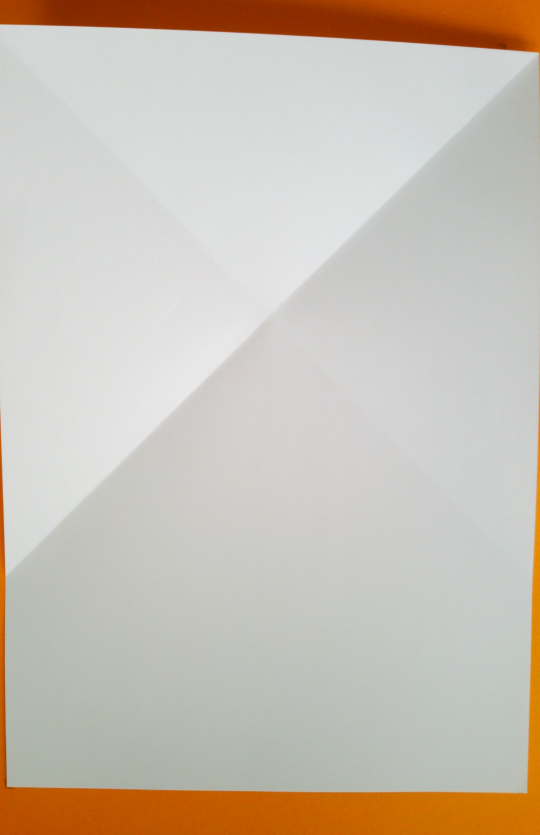
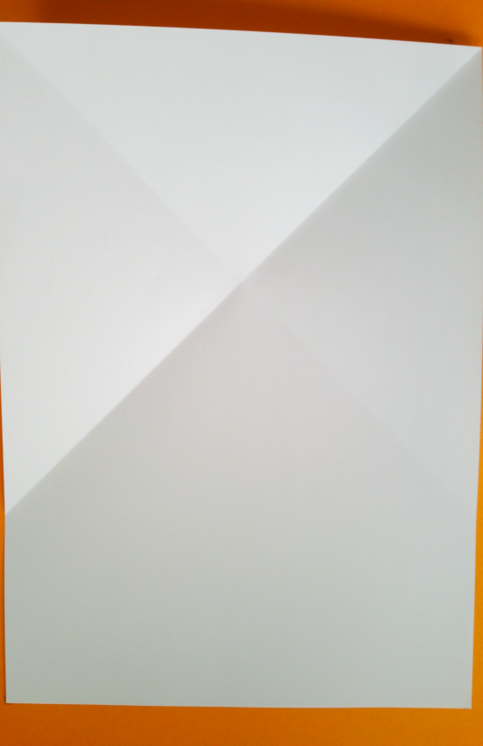
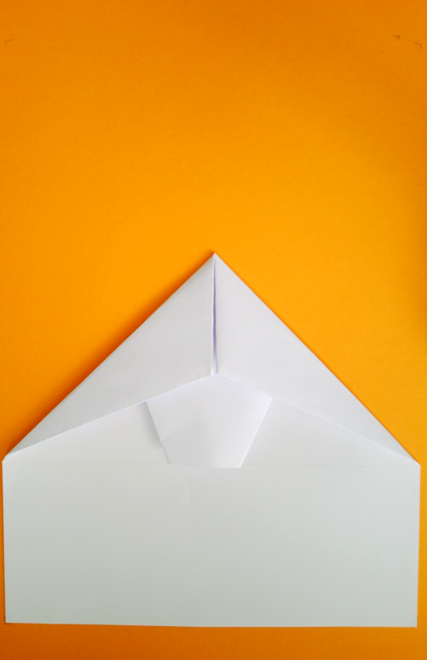
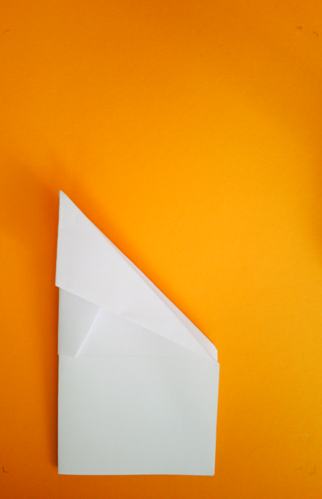
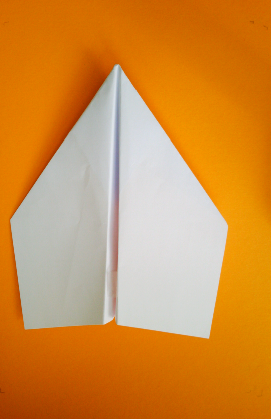

Weltrekord
Ein Gleiter der Extraklasse. Dieser Gleiter ist nicht nur einfach zu falten, er fliegt auch noch sehr sehr gut. Mit Ihm wurde sogar der Weltrekord gebrochen. In dieser Anleitung ist das Papierflugzeug ein wenig optimiert worden und gleicht nicht mehr ganz dem Original. Dieser Papierflieger besitzt einfach geniale Gleiteigenschaften.
1
Lege das Papier vor dich.

2
Knicke daraufhin die linke obere Ecke nach rechts und umgekehrt, die rechte Ecke nach links.
Falte das Papier anschließend wieder auf, sodass die Faltlinien zu sehen sind.
 

3
Falte nun die obere und untere Kante jeweils an die diagonalen Falze heran. Achte darauf zwischen den Schritten beiden Schritten, die erste Faltung wieder aufzufalten.

4
Im nächsten Schritt musst du die obere Spitze wie auf dem Bild auf die Höhe der diagonalen Falze.
5
Die oberen Kanten werden nun zur Mitte gefaltet.

6
Falte das Blatt nun in der Mitte nach hinten.

7
Jetzt ist es Zeit, die Flügel zu falten. Falte jeweils auf beiden Seiten die Flügel nach unten. Lasse dabei, wie auf dem Bild gezeichnet, ein Stück ungefaltet.
8
Falte die Flügel auf und damit ist der Weltrekordgleiter fertig. Viel Spaß beim Fliegen!
